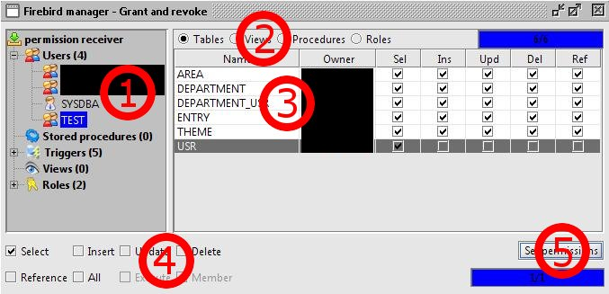

Firebird Manager Plugin
- Grant and revoke -
With this module you can manage permissions for firebird users, stored procedures, triggers, views and roles.
To change permissions, follow these steps:

1. Select a permission receiver from the tree or a whole group like Users, Stored Procedures, Triggers,
Views or Roles.
2. Select the group to give permissions (Tables, Views, Procedures or Roles).
The manager will search for entries of the selected group and display the permissions in the table thereunder.
3. To change permissions, select one or more of the displayed entries in the table.
4. Now select the checkboxes of the permissions you want to change.
Selected checkboxes grant permissions, unselected checkboxes revoke permissions.
4. Finally click on the button Set permissions to set the new permissions.
They will be given in 2 steps. At first, all permissions will be revoked.
Next, the selected checkboxes describe the new grant permissions.